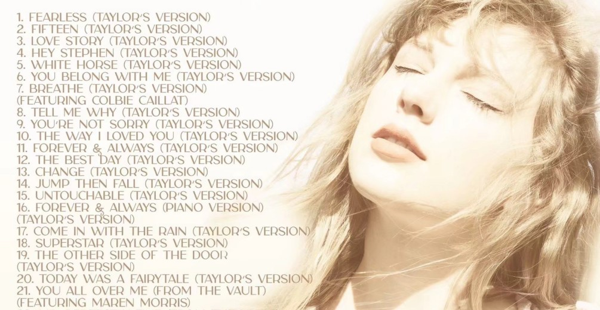

由于陷入与大机器唱片公司的版权纠纷，泰勒·斯威夫特于2019年宣布重新录制她在大机器唱片公司下发行的六张个人录音室专辑，来拿回自己的
创作作品。基于她于2008年发行的专辑《Fearless》对她的重大意义，她选择首先录制这张专辑。她表示，《Fearless》对她而言是一张充满魔力和
新奇的专辑，夹杂着她青春时期的喜与悲。重录过程比她想象的要更激励人心，这使得她更加坚定了完成所有歌曲的重新录制的计划。
除了收录了原版的所有歌曲之外，她还收录了之前未曝光的六首歌曲。泰勒·斯威夫特很喜爱这些未曝光的歌曲，但是当时不希望专辑收录有太多
分手歌曲、慢板歌曲，还有实体专辑对于歌曲的收录限制问题，这些歌曲并未发行。她对于这些歌曲有着各种实验性的尝试，也找了她喜欢的一些歌手
共同演唱。泰勒·斯威夫特在录制这张专辑时期待能够保留原始歌曲的风采，保留下当时的想法和与原曲相同的旋律。但同时，她也会在声音品质上
进行全面升级。
1、Fearless (Taylor’s Version)
2、Fifteen (Taylor’s Version)
3、Love Story (Taylor’s Version)
4、Hey Stephen (Taylor’s Version)
5、White Horse (Taylor’s Version)
6、You Belong With Me (Taylor’s Version)
7、Breathe (feat. Colbie Caillat) (Taylor’s Version)
8、Tell Me Why (Taylor’s Version)
9、You’re Not Sorry (Taylor’s Version)
10、The Way I Loved You (Taylor’s Version)
11、Forever & Always (Taylor’s Version)
12、The Best Day (Taylor’s Version)
13、Change (Taylor’s Version)
14、Jump Then Fall (Taylor’s Version)
15、Untouchable (Taylor’s Version)
16、Forever & Always (Piano Version) (Taylor’s Version)
17、Come In With The Rain (Taylor’s Version)
18、Superstar (Taylor’s Version)
19、The Other Side Of The Door (Taylor’s Version)
20、Today Was A Fairytale (Taylor’s Version)
21、You All Over Me (feat. Maren Morris) (Taylor’s Version) (From The Vault)
22、Mr. Perfectly Fine (From The Vault)
23、We Were Happy (From The Vault)
24、That’s When (From The Vault) (Featuring Keith Urban)
25、Don’t You (From The Vault)
26、Bye Bye Baby (From The Vault)
泰勒·斯威夫特通过《Fearless (Taylor's Version)》带领听众一同回顾了她作为乡村歌手出道的过往，可谓说是专辑的一大亮点。仔细听《Love
Story》《You Belong With Me》《Fearless》《Fifteen》等歌曲时，听众能听出她以更加成熟的歌艺及心境转变演唱歌曲，而带来的全新感受。同时，
这张专辑也让听众重新回顾了青春的美好回忆，以及找回追爱的勇气。
专辑中收录的以前并未曝光的歌曲是一大亮点。例如歌曲《You All Over Me》，讲述的是失恋后难以割舍的纠结感情。泰勒·斯威夫特与玛伦·莫里斯
的合作为这首承载着多年回忆的歌曲增添了不一样的火花。虽然这首歌是重新录制的版本，但是依然能够让听众回想起出道不久、正值青春年华的泰勒斯威夫特。

| 获奖记录 | |||||||||||
|---|---|---|---|---|---|---|---|---|---|---|---|
| 时间 | 颁奖机构 | 授予奖项 | 获奖作品 | 结果 | |||||||
| 2021 | 第55届乡村音乐电视奖 | 最佳家庭特点MV | 《The Best Day (Taylor's Version)》 | 获奖 | |||||||